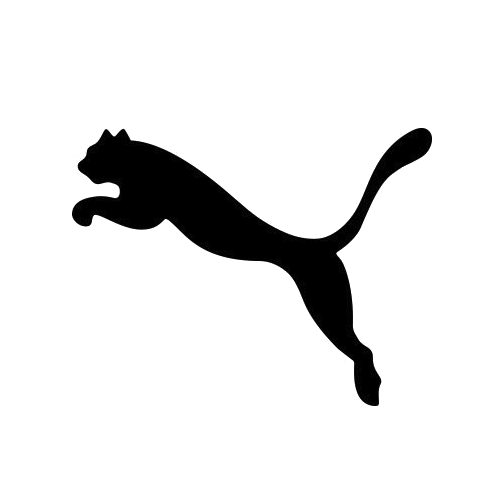
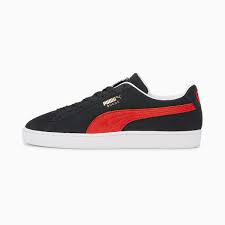
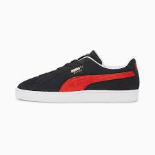

Zapatos deportivos con estilo de vida para hombres
Catálogo
 Q450 - Puma x Aries mostró craft
Q450 - Puma x Aries mostró craft
 Q500 - Easy Rider zapatos cómodos y deportivos

Q300 - Suede classic cómodos para hombres
Q500 - Easy Rider zapatos cómodos y deportivos

Q300 - Suede classic cómodos para hombres
 Q500 - Zapatos diseñados para carreras y cómodos
Q500 - Zapatos diseñados para carreras y cómodos
Contacto del programador
Allison Puac